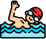

Natação Paris 2024
A natação é um esporte emocionante. É uma disputa de resistência e determinação, competindo em provas que exigem força e técnica. Cada braçada e cada virada são momentos cruciais, onde os atletas mostram todo o seu talento e treinamento. É incrível ver como eles se esforçam para alcançar a linha de chegada, buscando superar seus próprios limites e conquistar a vitória. A natação olímpica é um verdadeiro espetáculo de habilidade atlética e dedicação, que nos inspira e emociona a cada prova.
HISTÓRIA OLÍMPICA
A história da natação olímpica remonta aos tempos antigos, com evidências de prática na Grécia Antiga e no Império Romano. No final do século 18 e início do século 19, a natação moderna começou a se desenvolver na Europa onde a National Swimming Society of Great Britain (Sociedade Nacional de Natação da Grã-Bretanha) foi formada em 1837 e começou a realizar as primeiras competições. A natação foi incluída nos primeiros Jogos Olímpicos modernos em 1896, com eventos masculinos e, posteriormente, femininos em 1912. Ao longo dos anos, as técnicas de natação foram aprimoradas, com destaque para estilos como o crawl. Vários países se destacaram na natação olímpica, produzindo campeões e recordistas mundiais. O esporte cresceu em popularidade globalmente, com investimentos em programas de natação e instalações modernas. Hoje, a natação olímpica permanece como um dos esportes mais emocionantes e populares nos Jogos Olímpicos e em competições internacionais, com atletas quebrando barreiras e estabelecendo novos padrões na água.
REGRAS
A natação olímpica, um esporte emocionante e desafiador, exige disciplina,
técnica e conhecimento das regras para garantir a segurança e a justiça
nas competições. As provas de natação são realizadas em uma piscina de 50
metros de comprimento. Os quatro estilos das provas Olímpicas da natação
(individuais e de revezamento) são peito, borboleta, costas e crawl, sendo
o crawl usado predominantemente em provas de estilo livre e, dessa forma,
o termo “livre” é frequentemente usado como sinônimo. Uma quinta prova, o
medley, envolve os quatro estilos, com os nadadores alternando entre eles.
As distâncias também variam, com diferentes habilidades necessárias entre
uma prova de 50m a uma de 1.500m.
Aqui estão algumas das principais regras que regem essa modalidade:
Largada
A largada deve ser feita em blocos, cada nadador tem que se posicionar da
maneira estabelecida, após confirmação feita pelo juiz em que todos os
nadadores estão devidamente posicionados, é feita o tiro de largada onde o
nadador terá 1 segundo para realizar o salto, na partida de largada
submersa o nadador impulsiona-se para baixo e pode dar até 15 braçadas
antes de emergir.
Há 2 estilos de largadas predominantes do esporte:
Grab Start
Posição:
Os pés paralelos na borda frontal do bloco, separados na largura dos
ombros, mãos apoiadas nas bordas frontais dos blocos, à frente dos ombros
e o corpo curvado para frente, com o olhar direcionado para a água.
Execução:
Ao sinal do tiro, os dedos das mãos empurram com força as bordas dos
blocos, impulsionando o corpo para frente e para cima. As pernas são
estendidas para baixo e para trás, proporcionando impulso adicional. O
corpo entra na água de forma aerodinâmica, com a cabeça baixa e alinhada
com a coluna.
Touch Start
A posição no Touch Start é a mesma utilizada no Grab Start, o que muda é a
execução.
Execução:
Ao sinal do tiro, as mãos impulsionam o corpo para frente e para cima, em
direção à parede. Os pés permanecem na plataforma do bloco até o toque na
parede. Ao tocar a parede com as mãos, os braços são flexionados e o corpo
impulsionado para baixo e para trás, iniciando a braçada de costas.
Desqualificações
Na natação olímpica, a justiça e a competitividade são pilares
fundamentais. As regras de desqualificação visam garantir a aderência aos
princípios esportivos e a igualdade de chances entre os nadadores.
Falsa Largada
Duas Falsas Largadas: Em qualquer estilo, a segunda falsa largada resulta
na desclassificação do nadador.
Movimento Precipitado: Movimentar-se antes do tiro leva a um aviso.
Reação Lenta: Exceder o tempo máximo de 1 segundo para reagir ao tiro
também pode gerar um aviso.
Infrações de Estilo
Movimentos Incorretos: Cada estilo possui regras específicas para a
movimentação dos braços e pernas.
Submersão Excessiva: No nado livre, apenas a cabeça pode ficar
submersa.
Toque Irregular na Virada: Toque com as mãos ou pés antes de qualquer
parte do corpo.
Patadas Irregulares: No nado costas, os pés devem permanecer na superfície
da água.
Obstrução e Conduta Antidesportiva
Impedir o Progresso de Outro Nadador: Conduta antidesportiva que leva à
desclassificação.
Agarrar, Empurrar ou Puxar: Proibido durante a prova.
Linguagem Inadequada ou Comportamento Agressivo: Pode resultar em
penalidades.
Violações de Equipamentos
Maiô Irregular: Deve ser ajustado ao corpo e não cobrir os ombros.
Touca Inadequada: Obrigatória para todos os nadadores e deve cobrir todo o
cabelo.
Óculos Não Permitidos: Utilize apenas óculos aprovados pela FINA.
Outros Motivos
Abandono da Prova: Sair da água sem autorização leva à desclassificação.
Interferência Externa: Receber ajuda de terceiros durante a prova é
proibido. Comportamento Inapropriado: Atitudes antiéticas ou que
prejudiquem o andamento da prova podem levar à penalização.